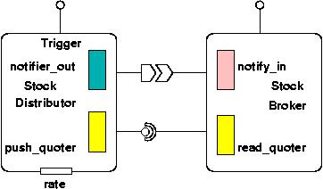

Quoter example README
To download the source codes of this example please refer to the SVN
repository at $CIAO_ROOT\tutorials\Quoter\Simple
Example Description
The StockDistributor
component would be monitoring a real-time stock database. When the
values of particular stocks change, it pushes a CCM eventtype
that contains the stock's name via a CCM event source to the
corresponding CCM
event sink implemented by one or
more StockBroker components. If these components are interested
in the stock they can obtain more information about it by invoking a
request/response operation via their CCM receptacle on a CCM facet
exported by the StockDistributor component. The diagram of this
example is shown in fig 1.

figure 1
The files you will find
The interfaces, data types and exceptions shared by the components
of
this
application are specified in the Stock_Base.idl._exec.h and _exec.cpp files
are the actual
implementation of the components.
Make
Navigate to the directory $CIAO_ROOT/docs/tutorials/Quoter/Simple
and do:
$ACE_ROOT/bin/mwc.pl -type gnuace (use different -type option
if you are using a
compiler/IDE other than GNU make)
For example, use %ACE_ROOT%/bin/mwc.pl -type vc71 if you
are using
Visual C++ 7.1 IDE.
Then build/make the generated project/make files. Correct errors in the
source codes if necessary.
Assemble
Now we can step forward to build the assembly.
In the descriptor subdirectory, you'll find a XML descriptor file
that
describes your deployment plan, the
flattened_deploymentplan.cdp. This file declaratively specifies how the
component assembly is
constructed.
Specifically, it defines the component types, component instances,
component
connections and implementation artifact descriptions.
Please make sure that the Modified_Deployment.xsd and XMI.xsd
files
are in the Display/descriptors directory. The former file could be
found in $CIAO_ROOT/docs/schema
directory.
Note: Creating the deployment plan descriptor is a tedious and
error-prone job,
you can download CoSMIC
to
assist you in this step. Please refer to this tutorial
to see how you can use CoSMIC to automatically generate the descriptor
file.
Running the program
>From different shells in $CIAO_ROOT/docs/tutorials/Quoter/Simple/descriptors/
directory:
- Start NodeManagers (NodeDameon) by running runNodeDaemon.pl
- Start the execution manager
$DANCE_ROOT/bin/dance_execution_manager -o ior -i
Stock.dat
The Stock.dat file describes the deployment daemons DAnCE's
Execution_Manager
will contact to instantiate ComponentServer's, home's, and component
instances.
Each line specify the name of a installation "destination" and the
corresponding corbaloc IOR for the CIAO_Daemon.
- NOTE: As one can see, we use the "Stock.dat" file to
instruct the Execution_Manager how to find the endpoint of each
individual NodeManager (i.e., Node Daemon) where component(s) will be
deployed, so this is non-standard. We plan to use Naming Service to do
this in the future.
- Start the plan_launcher by running
$DANCE_ROOT/bin/dance_plan_launcher -p
flattened_deploymentplan.cdp -k file://ior
- By now the components should be successfully deployed. You may
run the driver program to start the application. Open a new shell, keep
in the /Quoter/descriptors directory, and try the following
commands, see what happens in the component server
Start the distributor
service at a frequency of 3 hertz:
../Distributor/Distributor.exe
-o -r3
Use the broker program to
subscribe to MSFT stock
../Broker/Broker.exe -s MSFT
Subscribe to IBM stock
../Broker/Broker.exe -s IBM
Unsubscribe to MSFT stock
../Broker/Broker -u MSFT
Turn off the distribution
service:
../Distributor/Distributor -f
Please contact mxiong@dre.vanderbilt.edu if you have any questions.